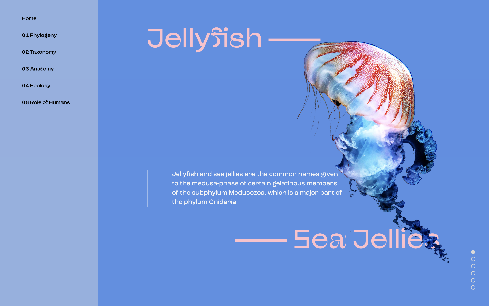

Microsite: Design and Development
I collaborated with Skye Wang to create a website about jellyfish. I designed and developed the website using the Wikipedia article about jellyfish and stock images. This single-page website is aimed to be informative and immersive, and create the feeling of diving into the ocean with jellyfish.